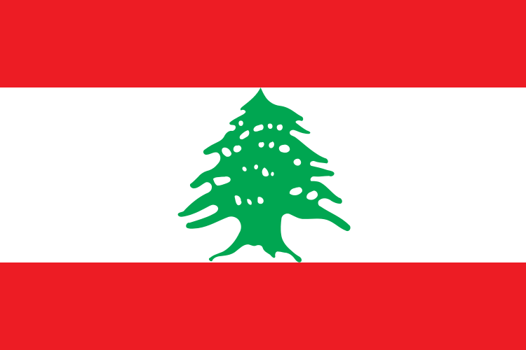

Kahlil Gibran
Author of The Prophet, one of the best-selling books of all time, translated into 100+ languages. He bridged East and West in a single sentence.
For the diaspora & its allies
The country is small. The story is not.
Pressed between the Mediterranean Sea and the mountains of the East, Lebanon is one of the smallest countries in the world — and one of the most consequential. Its people have been traders, poets, builders, and survivors for seven millennia.
The official language is Arabic. The unofficial language is resilience.

“One hand can’t clap.”Iid wa7de ma btza2f — Lebanese proverb
Every word you’re reading right now traces its lineage to ancient Lebanon. The Phoenicians — seafaring merchants based in the coastal cities of Byblos, Sidon, and Tyre — developed the alphabet that became the ancestor of Greek, Latin, Arabic, Hebrew, and every Western writing system.
The city of Byblos, continuously inhabited for 7,000 years, was so synonymous with writing that the Greeks named their word for book after it: biblion. The Bible itself takes its name from this Lebanese city.
Lebanon didn’t just contribute to civilization. It gave civilization the tool to record itself.
More Lebanese live outside Lebanon than inside it. Three times more. Scattered across six continents, they carry the cedar with them — in their kitchens, their work ethic, and the way they pull up a chair and say ahlan wa sahlan.
In the U.S., Lebanese Americans are the largest group within the Arab American population — nearly one in three. The deepest roots are in Dearborn, Michigan, the first Arab-majority city in America, and in Brooklyn’s Bay Ridge, where families have been since the 1890s.
“A bird in the hand is worth ten on the tree.”Asfour bel iid wala 3ashra 3al shajra — Lebanese proverb
Author of The Prophet, one of the best-selling books of all time, translated into 100+ languages. He bridged East and West in a single sentence.
Founded St. Jude Children’s Research Hospital — where no child is denied treatment regardless of ability to pay. One of America’s most beloved institutions.
Consumer advocate who made seatbelts mandatory, helped create the EPA, and changed what Americans expect from corporations. Ran for president four times.
Academy Award-nominated actress and producer whose father’s family hails from Baabdat, Lebanon. One of the most influential Latinas in Hollywood.
Three-time Emmy winner for Monk and The Marvelous Mrs. Maisel. Born in Green Bay to Lebanese immigrant parents.
“First Lady of the Press.” Covered every U.S. president from JFK to Obama from the front row of the White House briefing room.
Nobel Prize in Chemistry, 1990. His work on retrosynthetic analysis revolutionized how scientists design molecules — saving countless lives.
Author of The Black Swan and Antifragile. Born in Amioun, he taught the world to think about risk, randomness, and resilience.
The voice of American Top 40 for four decades and Shaggy in Scooby-Doo. “Keep your feet on the ground, and keep reaching for the stars.”
Lebanese cuisine didn’t just arrive in America — it rewired American taste. Between 2009 and 2015, U.S. chickpea production quadrupled from 25 million to over 100 million pounds, driven almost entirely by the hummus boom. Tabbouleh entered the mainstream alongside the 1970s health food movement. Today, mezze — the Lebanese tradition of many small, shared dishes — has become shorthand for generosity itself.
In Lebanon, to feed someone is to love them. The table is never too small for one more chair.
“Love overlooks defects; hatred magnifies them.”Lebanese proverb
After years of political vacuum, economic collapse, and the devastation of the 2024 conflict, Lebanon is writing a new chapter. It’s messy, incomplete, and fragile — but it’s moving.
Cultural revival: Beirut’s Mar Mikhael neighborhood has been reborn as a creative district — galleries, studios, and restaurants filling spaces that survived the 2020 port explosion. UNESCO is restoring the Sursock Museum and the Grand Theatre. The city keeps rebuilding itself. It always has.
Whether you’re Lebanese by blood or by love, there are ways to stay connected, show up, and make a difference.